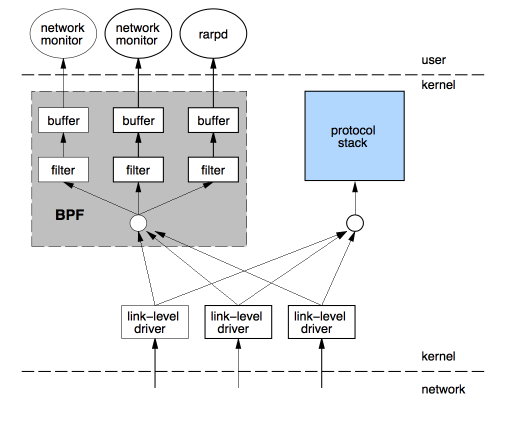
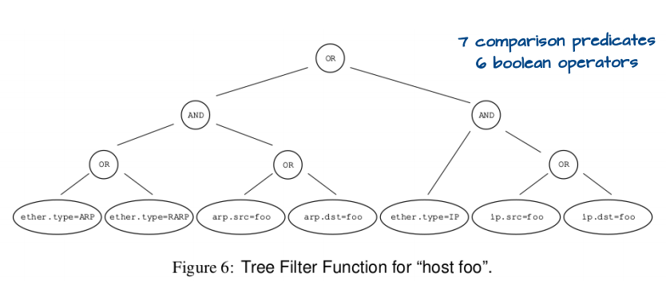
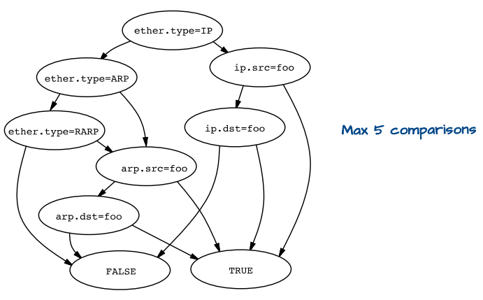
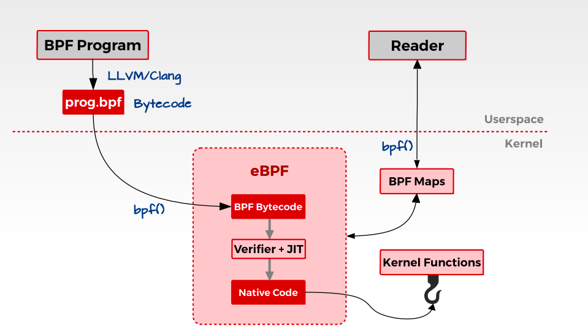

Linux 核心設計: eBPF
什麼是 BPF？
傳統的封包過濾方法，需要先將 kernel 的封包複製進 userspace，再進一步於 userspace 分析封包(使用 tap)。然而這個複製的過程 cost 是很高的。此外，傳統的封包過濾演算法效能也欠佳。
直到 1992 年 Steven McCanne 和 Van Jacobson 發表的論文 The BSD Packet Filter: A New Architecture for User-level Packet Capture 中，提出了 Berkeley Packet Filter (BPF)，避免了把無用的封包複製到 userspace 的過程。形式上說來，BPF 就是一個跑在 kernel 中的虛擬機。因此，我們得以把 userspace 的程式轉換成 byte code(一個虛擬的指令集) 注入到 kernel space 中執行。
 一些無聊的事:
一些無聊的事:
這裡也可以看到 BPF 的原本應該是叫 BSD Packet Filter，也就是說機制原本是實現在 BSD 系統上的。不過似乎隨著 BPF 漸漸被不同作業系統納入，名稱就輾轉變成了 Berkeley Packet Filter 了 XD
後來 Linux 也引入了 BPF，在某些應用上被使用(例如 tcpdump)。並且，BPF 也有了加速用的 Just-In-Time (jit) 編譯器。
之後，BPF 被擴展至網路以外的領域，而可以被應用在 kernel 效能分析，那便是 eBPF(extended BPF)，而原本我們所說的 BPF 則被可以被改稱為 cBPF(classic BPF)
BPF 的設計
BPF 的設計如圖。經過 data link layer 層的封包會額外傳遞一份給 BPF，在 kernel 先行過濾後再複製所要求的封包到 userspace。

除了在 kernel space 就先行過濾來提升效能以外，BPF 的 filter 架構也有學問。一般而言，filter 架構可以分成 boolean expression tree 或者 directed acyclic control flow graph(或稱 CFG) 兩種。在樹狀結構中，每個節點都表示一個 boolean operaiton(and、or 等，如下圖所示)

在 CFG 中，節點則是表示對一個封包欄位的判別(若為 true 就往右分支走，反之向左)，並用兩個終點的 leaves 表示通過 filter 或否。(等價於前面 boolean expression tree 的 CFG 如下圖)

可以從圖中看到 CFG 會需要較少的 parsing 次數，因此 BPF 透過 CFG 的 filter 設計來提升效能。
BPF 的詳細請參照 reference，暫時只先研究部份內容。
另外，我感覺自己有些一知半解，因此如果有發現用詞不精準的地方都歡迎指教!
什麼是 eBPF？
eBPF 基於 BPF 可將使用者定義的程式注入 kernel 中的架構做出了更多改進，其設計得以利用現代硬體的優勢。
- eBPF virtual machine 更接近於現代的處理器，因此 eBPF 的虛擬指令集可以緊密地映射到真實硬體的 ISA，提高性能
- eBPF 使用 64 位元的暫存器，並且可用的暫存器數量也從 2 個提昇到 10 個
- cBPF 和核心溝通的機制是 recv()，而 eBPF 則引入全新的 map 機制。透過 map 達成 kernel 和 user 間的資料交換，減少 system call 耗費的時間成本
- 考量安全性，eBPF 有 verifier 機制，在注入程式之前，先進行一系列的檢查，避免注入危險的程序損壞到 kernel
其整體架構大致可以如下表示:

eBPF 有何用途?
eBPF 理所當然的可以如 cBPF 做到過濾封包。然而實際上 eBPF 可以做得還遠遠不只這些! eBPF 可以把你的程式注入到 kernel 中，將其嵌入到任何的目標程式路徑上，一旦這些路徑被走過，便會執行注入的程式。因此 eBPF 可以做到:
- Kprobes (追蹤 kernel functions)
- Uprobes (追蹤 user functions)
- Linux Tracepoints
- USDT (Userland Statically Defined Tracing)
等等更多
bpf system call
要在 linux 中實現 bpf，可以通過 bpf() 這個 system call
int bpf(int cmd, union bpf_attr *attr, unsigned int size);
union bpf_attr {
struct { /* Used by BPF_MAP_CREATE */
__u32 map_type;
__u32 key_size; /* size of key in bytes */
__u32 value_size; /* size of value in bytes */
__u32 max_entries; /* maximum number of entries
in a map */
};
struct { /* Used by BPF_MAP_*_ELEM and BPF_MAP_GET_NEXT_KEY
commands */
__u32 map_fd;
__aligned_u64 key;
union {
__aligned_u64 value;
__aligned_u64 next_key;
};
__u64 flags;
};
struct { /* Used by BPF_PROG_LOAD */
__u32 prog_type;
__u32 insn_cnt;
__aligned_u64 insns; /* 'const struct bpf_insn *' */
__aligned_u64 license; /* 'const char *' */
__u32 log_level; /* verbosity level of verifier */
__u32 log_size; /* size of user buffer */
__aligned_u64 log_buf; /* user supplied 'char *'
buffer */
__u32 kern_version;
/* checked when prog_type=kprobe
(since Linux 4.1) */
};
} __attribute__((aligned(8)));
- attr 允許數據在 kernel 和 user space 間的交換
- cmd 決定 bpf 對應的相關操作
- size 是指向 attr 的 union 大小
在 linux/bpf.h 中有定義 cmd 的 macro
- BPF_PROG_LOAD
- BPF_MAP_CREATE
等等
eBPF data structure
由於 eBPF 需要追蹤並統計 kernel 中的統計資訊，因此需要一個 eBPF Maps 資料結構來記錄。eBPF Maps 使用 key-value 的方式儲存數據， 可以透過 cmd = BPF_MAP_CREATE 建立，並得到一個 file descriptor 的回傳。
map 會有以下 member:
- map type(hash, array…)
- maximum number of elements
- key size in bytes
- value size in bytes
透過 map 機制，無論是從使用者層級抑或核心內部都可存取，進而提升了效率。
建立 eBPF bytecode
直接撰寫 eBPF 的虛擬指令(bytecode)並非易事，所幸 LLVM Clang compiler 支援將 C 編譯成 byte code，再透過 bfs system call(cmd = BPF_PROG_LOAD) 將 byte code 載入。你可以透過 Clang 的
-target = bpf
參數將 C 編成 elf 格式，再透過 libbpf 函式庫解析並注入 kernel。
在 /samples/bpf 中有許多範例程式。
透過 BCC 撰寫 BPF 程式碼
BPF Compiler Collection (BCC) 作為 IOVisor 子計畫被提出，讓進行 BPF 的開發只需要專注於 C 語言注入於核心的邏輯和流程，剩下的工作，包括編譯、解析 ELF、載入 BPF 代碼塊以及建立 map 等等基本可以由 BCC 一力承擔，無需多勞開發者費心。
安裝
在 Ubuntu 系統上安裝 BCC 相關工具可參考以下步驟。
$ git clone https://github.com/iovisor/bcc.git
$ cd bcc
$ mkdir build; cd build
$ cmake ..
$ make -j$(nproc)
$ sudo make install
安裝途中可能會碰到缺少套件的問題。
-
"Unable to find clang libraries":
sudo apt-get install libclang-dev -
根據使用的 llvm 版本，可能需要安裝特定版本的 clang libraries:
sudo apt-get install libclang-18-dev -
"No rule to make target '/usr/lib/llvm-18/lib/libPolly.a":
sudo apt-get install libpolly-18-dev -
"Could NOT find LibElf":
sudo apt-get install libelf-dev
步驟過程如果遇到其他問題，也可以對照此筆記。其他系統或者詳細的安裝方式，請直接參考官方文件 Installing BCC。
執行程式
Kprobes 範例
執行以下程式:
from bcc import BPF
prog = """
int hello(void *ctx) {
bpf_trace_printk("Hello, World!\\n");
return 0;
}
"""
b = BPF(text=prog)
b.attach_kprobe(event="__x64_sys_clone", fn_name="hello")
print ("PID MESSAGE")
b.trace_print(fmt="{1} {5}")
如果跟原本的程式相比，你會注意到
attach_kprobe
的
event
有做一些調整，這是因為原本的
sys_clone
在新的 Linux 版本中有更換命名，如果照原本的寫法會找不到 symbol。
證據是，如果輸入
> sudo cat /boot/System.map-`uname -r` | grep " sys_clone"
會看到沒有東西印出來，而
> sudo cat /boot/System.map-`uname -r` | grep " __x64_sys_clone"
則會有相同的 symbol。(注意 sys_clone 有個空白XD)
或者透過以下指令看看是否存在
sys_clone
這個 kernel symbol
$ cat /proc/kallsyms | grep sys_clone
程式的內容很淺顯易懂，就是每次
__x64_sys_clone
被執行的時候，印出 PID 跟 "Hello World" 訊息。
CO-RE
見文 BPF 的可移植性: Good Bye BCC! Hi CO-RE!。
透過 libbpf 撰寫 BPF 程式碼
BCC 雖然一定程度簡化了 BPF 的開發，但使用上仍有一些缺點。例如可移植性的限制、高度依賴 Clang/LLVM 帶來的負擔等，因此社群會更建議透過使用 CO-RE 技術的 libbpf 來進行 BPF 程式的開發。
一般而言，使用 CO-RE 進行的 BPF program 可區分為兩部份。一部份會編譯成 BPF bytecode，之後被載入至 kernel space 運行;另一部份則是執行於 userspace 的 BPF loader。其依賴於 libbpf，被用來將 BPF bytecode 載入到 kernel，並監視其狀態以在 userspace 進行對應行為。
其中要載入至核心的部份只能用 C 撰寫( * )，更嚴謹的說是受限制的 C 語法。其透過可以支援編譯出 BPF bytecode 的編譯器編譯後，產生 ELF 格式的二進位檔。而執行在 user space 的程式則有較多選擇，可以用 C/Python/Rust 等等語言撰寫。
使用 C
可以參考以下文章
使用 Rust
在開始前，需要安裝一些 dependency:
$ apt install clang llvm libelf1 libelf-dev zlib1g-dev
此外也會需要 bpftool:
$ git clone https://github.com/libbpf/bpftool.git
$ cd bpftool
$ git submodule update --init
$ cd src
$ make
$ sudo make install
接著，假設我們要建立一個簡單專案
hello
，可以遵循以下的步驟:
-
建立專案的資料夾:
$ cargo new hello -
在建立出來的
hello底下的
Cargo.toml中添加 libbpf-cargo 和 libbpf-rs 的 dependency
[dependencies]
libbpf-rs = "0.19"
[build-dependencies]
libbpf-cargo = "0.13"
- 在 hello 底下建立檔案
(檔案名稱必須是build.rs
，參見 The Cargo Book - Build Scripts)build.rs
use std::fs::create_dir_all;
use std::path::Path;
use libbpf_cargo::SkeletonBuilder;
const SRC: &str = "./src/bpf/hello.bpf.c";
/* Reference:
* - https://github.com/libbpf/libbpf-bootstrap/blob/master/examples/rust/tracecon/build.rs
*/
fn main() {
// FIXME: Is it possible to output to env!("OUT_DIR")?
std::env::set_var("BPF_OUT_DIR", "src/bpf/.output");
create_dir_all("src/bpf/.output").unwrap();
let skel = Path::new("src/bpf/.output/hello.skel.rs");
SkeletonBuilder::new()
.source(SRC)
.build_and_generate(&skel)
.expect("bpf compilation failed");
println!("cargo:rerun-if-changed={}", SRC);
}
- 要被 hook 至核心的 BPF program 中總是要 include
，我們可以透過vmlinux.h
來產生，或者仿效 libbpf-rs 的範例 直接複製一份，但這作法可能須注意相容性的問題(?)bpftool
bpftool btf dump file /sys/kernel/btf/vmlinux format c > src/bpf/vmlinux.h
- 我們通過 C 來撰寫一個簡單的 BPF program
:src/bpf/hello.bpf.c
-
用來將每個編譯出的 object 放到給定的 ELF section 中，這會影響 bytecode 被載入 kernel 的行為，例如SEC
，SEC("tracepoint/syscalls/sys_enter_execve")
表示 BPF program 會追蹤 kernel 的特定事件，而具體的事件是tracepoint
，我們可以透過syscalls/sys_enter_execve
知道有哪些事件是可以追蹤的cat /sys/kernel/debug/tracing/available_events
$ sudo cat /sys/kernel/debug/tracing/available_events | grep sys_enter_execve
syscalls:sys_enter_execveat
syscalls:sys_enter_execve
- kernel 會提供 API 以供更容易的撰寫 BPF program，一系列的 API 在
這個路徑底下，例如tools/lib/bpf
可以用來印出 debug messagebpf_printk
// We must include this
#include "vmlinux.h"
#include <bpf/bpf_helpers.h>
SEC("tracepoint/syscalls/sys_enter_execve")
int bpf_prog(void *ctx) {
char msg[] = "Hello, World!";
bpf_printk("invoke bpf_prog: %s\n", msg);
return 0;
}
char LICENSE[] SEC("license") = "GPL";
-
執行
cargo build，之後我們應該可以在
src/bpf/.output路徑中找到
skel.rs -
再來要準備 BPF loader 的部分，我們在
src路徑下建立一個
main.rs，透過
cargo build再編譯一次
use anyhow::Result;
use std::sync::atomic::{AtomicBool, Ordering};
use std::sync::Arc;
use std::{thread, time};
#[path = "bpf/.output/hello.skel.rs"]
mod hello;
use hello::*;
/* Reference: https://www.sobyte.net/post/2022-07/c-ebpf/ */
fn main() -> Result<()> {
let hello_builder = HelloSkelBuilder::default();
/* Open BPF application */
let open_skel = hello_builder.open()?;
/* Load & verify BPF programs */
let mut skel = open_skel.load()?;
/* Attach tracepoint handler */
let _tracepoint = skel
.progs_mut()
.bpf_prog()
.attach_tracepoint("syscalls", "sys_enter_execve")?;
/* Run `sudo cat /sys/kernel/debug/tracing/trace_pipe` to
* see output of the BPF programs */
let running = Arc::new(AtomicBool::new(true));
let r = running.clone();
ctrlc::set_handler(move || {
r.store(false, Ordering::SeqCst);
})?;
let ten_millis = time::Duration::from_millis(10);
while running.load(Ordering::SeqCst) {
/* trigger our BPF program */
eprint!(".");
thread::sleep(ten_millis);
}
Ok(())
}
- 自此，我們終於可以載入 BPF bytcode 了，執行
(需要 root 權限因為其會需要sudo ./target/debug/hello-libbpf-rs
)後，在另一個 shell 執行setrlimit
就可以找到我們注入的信息！sudo cat /sys/kernel/debug/tracing/trace_pipe
$ sudo cat /sys/kernel/debug/tracing/trace_pipe
[sudo] password for rin:
sudo-11688 [004] d..31 1404.417057: bpf_trace_printk: invoke bpf_prog: Hello, World!
<...>-11690 [005] d..31 1408.100552: bpf_trace_printk: invoke bpf_prog: Hello, World!
^C
與 C 相比，使用 Rust 撰寫 eBPF code 的好處是得易於其完善的 build system，在專案管理上相對容易。例如 [
ebpf-strace
](https://github.com/RinHizakura/ebpf-strace) 這個專案只需藉由 cargo 就可以取得所有依賴的套件、完整編譯並運行。
Reference
- intro-ebpf
- Notes on BPF & eBPF
- Develop a Hello World level eBPF program from scratch using C
- Writing eBPF tracing tools in Rust
- Writing BPF code in Rust
- foniod/redbpf
- aya-rs/aya
- libbpf
- 张亦鸣 : eBPF 简史
- BPF, docs: libbpf Overview Document
- Libbpf: A Beginners Guide
- ebpf/libbpf 程序使用 tracepoint 的常见问题
- BPF 进阶笔记
- BPF ring buffer
- BPF CO-RE reference guide
- awesome-ebpf